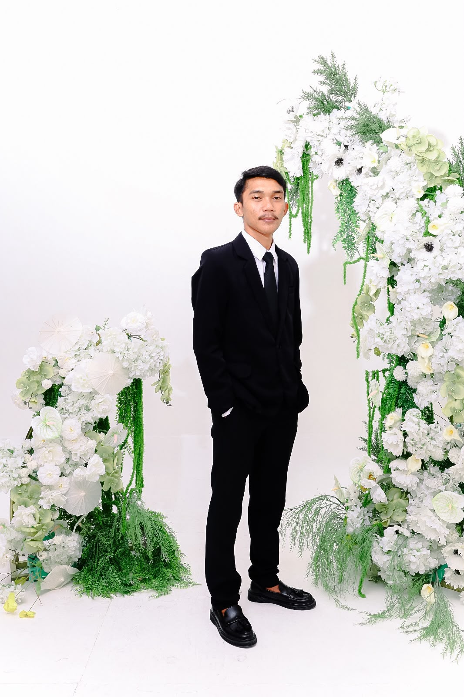
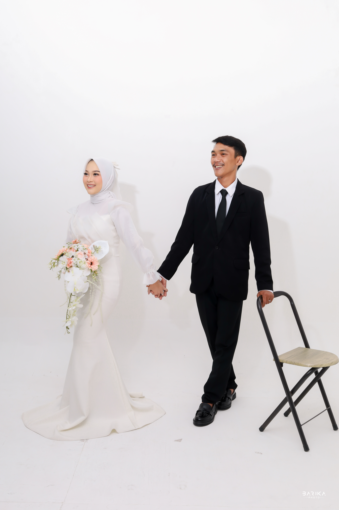
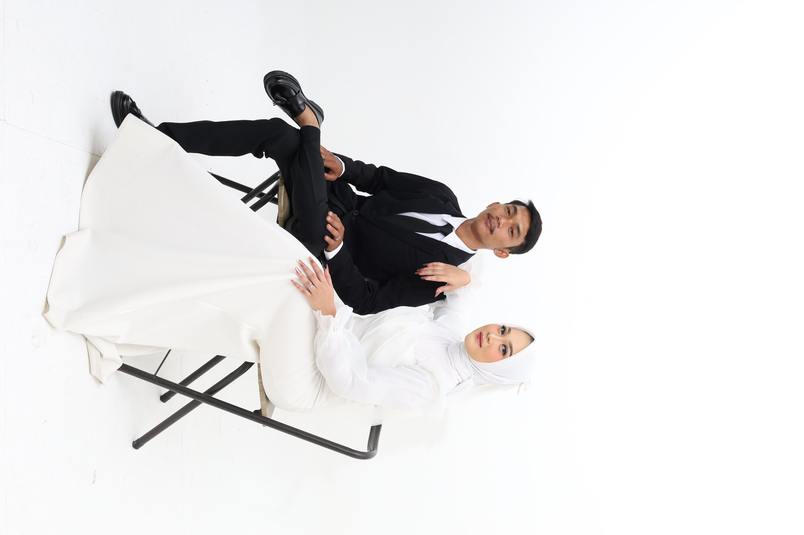
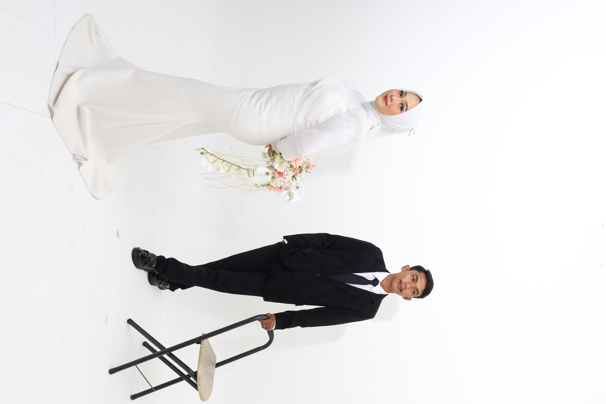
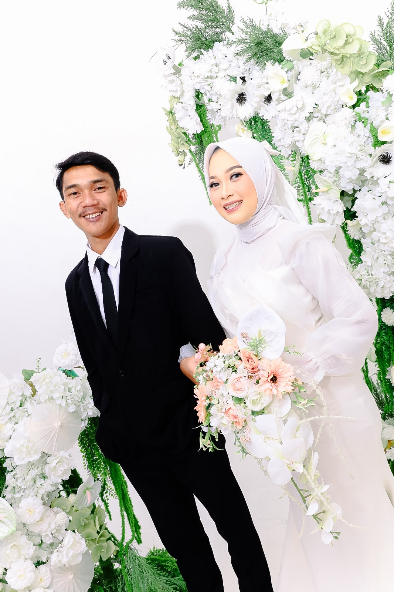

Tasyakuran Pernikahan
Anjar & Olan
05 . 07 . 2026
“Wahai manusia! Bertakwalah kepada Tuhanmu yang telah menciptakanmu dari satu jiwa, dan dari padanya Dia menciptakan pasangannya, dan dari keduanya Dia memperbanyak laki-laki dan perempuan yang banyak sekali. Bertakwalah kepada Allah yang dengan nama-Nya kamu saling meminta, dan (peliharalah) hubungan kekeluargaan. Sesungguhnya Allah selalu menjaga dan mengawasimu.”
Surah An-Nisa Ayat 1


Olan
Olan Maulana, S.Kom
Putra Keempat dari
Bapak Abdul Manan, S.Pd (Alm) & Ibu Bahronah
Tasyakuran Pernikahan
Minggu, 05 Juli 2026
Pukul 08.00 WIB sd Selesai
Kediaman Mempelai Pria
Kp. Kernaden RT/RW 002/002
Desa Ukirsari Kec. Bojonegara
RSVP
Sampaikan do'a atau salam kepada pengantin dan konfirmasi kehadiran.
Perjalanan Kami
Awal Pertemuan
Agustus 2022: Di tahun yang sederhana itu, kami dipertemukan tanpa rencana. Bukan pertemuan yang penuh drama, tapi cukup untuk menumbuhkan rasa yang perlahan berubah menjadi doa.
Menjalin Hubungan
Pertemuan itu berkembang menjadi kisah yang kami rawat perlahan. Kami menjalin hubungan yang dipenuhi proses belajar dan bertumbuh tentang kepercayaan, pengertian, dan bagaimana saling menjaga.
Lamaran
11 April 2026 : Setelah bertahun-tahun saling mengenal dan belajar tentang arti sabar dan pengertian, ia datang membawa niat tulus bersama restu kedua orang tuanya. Hari itu menjadi saksi bisu, ketika dua hati menyatukan harapan dalam ridha keluarga dan bimbingan-Nya.
Hari Bahagia
01 Juli 2026 : Akhirnya, kami melangkah ke hari yang selama ini kami panjatkan dalam doa. Bukan karena waktu yang panjang, tapi karena keyakinan yang kuat bahwa cinta yang diridhoi Allah pasti akan menemukan jalannya.
Tasyakuran Pernikahan
05 Juli 2026 : Sebagai wujud rasa syukur yang tak terhingga kepada Allah SWT atas segala nikmat dan karunia-Nya, kami mengundang Bapak/Ibu/Saudara/i untuk hadir dalam acara tasyakuran pernikahan kami. Semoga kebersamaan ini senantiasa diberkahi, dilimpahkan rezeki, dan menjadi keluarga yang sakinah, mawaddah, dan warahmah.
Kenangan Kami





Wedding Gift
Terima kasih atas doa restu dan kebaikan hati Anda. Jika berkenan memberikan tanda kasih, dapat melalui cara berikut:
1630011235432
OLAN MAULANA
1926785592
ANJAR JANNAH
Alamat Pengiriman
Kp. Kernaden RT/RW 002/002 Desa Ukirsari
Bojonegara - Serang Banten

Merupakan suatu kebahagiaan dan kehormatan bagi kami, apabila Bapak/Ibu/Saudara/i berkenan hadir dan memberikan doa restu kepada kedua mempelai.
Hormat Kami Yang Mengundang